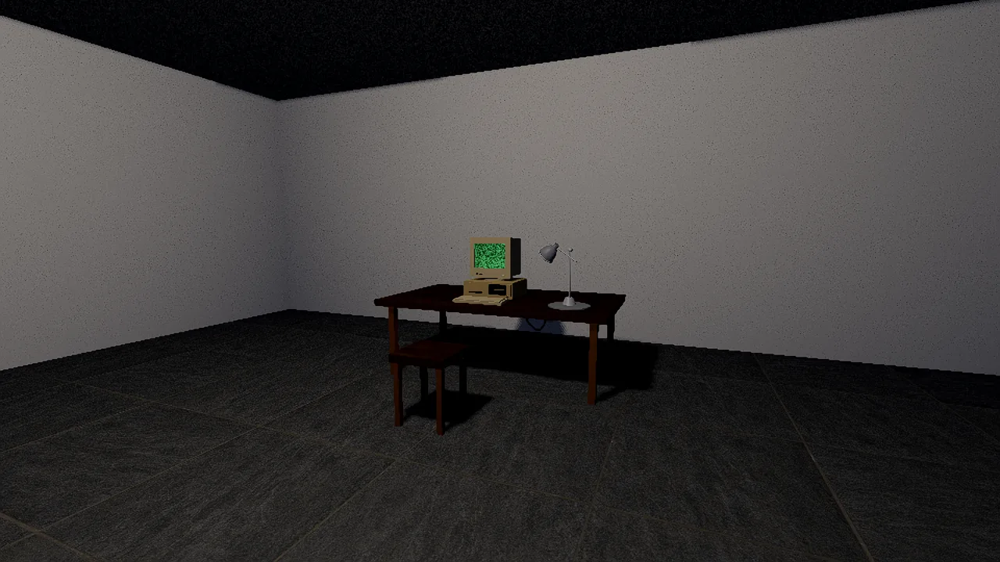

SYSTEM STATUS: OPERATIONAL
/
LOCAL NODE TIME
ESCAPE_02
A HAND-BUILT ENVIRONMENTAL ESCAPE PROTOTYPE
一间没有出口的房间。一台不该开机的电脑。
一个纯兴趣驱动的 Godot 密室逃脱原型。
SCROLL ↓
PURE INTEREST PROJECT
NO SCHEDULE
NO CLIENT
WORK IN PROGRESS
GODOT 4.7
ENVIRONMENTAL STORYTELLING
PURE INTEREST PROJECT
NO SCHEDULE
NO CLIENT
WORK IN PROGRESS
GODOT 4.7
ENVIRONMENTAL STORYTELLING
[01] ABOUT
先有一个房间，
然后才有一个故事。
ESCAPE_02 是一个纯兴趣驱动的个人 Godot 项目。它从一间手工搭建的 3D 房间开始：花岗岩地砖、白色灰泥墙、深色天花，一扇门，一张书桌，一台泛黄的 90 年代电脑。
没有排期，也没有甲方。所有东西都是边做边学：程序化生成的电线、写实 PBR 材质、视线锥交互、全屏 VHS 后处理，以及一块贴在 3D 显示器上的 2D CRT 屏幕。
目前仍是早期原型——能走、能开门、能关灯、能坐下，也能盯着屏幕被吸进去；但完整的解谜链路还没接上。
「门外没有地面。这是设计，不是 bug。」
[02] FEATURES
气氛不是滤镜，
是一堆细节堆出来的。
01SPACE
手工搭出来的房间
房间和走廊都由基础几何体拼成：花岗岩地砖、白色灰泥墙、深色天花、白色方砖，一共 152 个节点。没有现成模型，UV 和三平面映射都是一点点调出来的。
- 152 NODES
- PBR MATERIALS
- 5 CORRIDOR LIGHTS
02DOOR
一扇真的能开的门
1.1 × 2.1 m 的门洞，三只铰链，双面把手。按 E：把手先绕自身轴转 45°，门再向外推开 110°；门外是走廊，最初没有地面。
- HANDLE 45°
- DOOR 110°
- AUTO-CLOSE
03SCREEN
屏幕不是一张贴图
FACILITY CONTROL 是 SubViewport 里 1152×836 的 2D 界面，实时贴回 3D 显示器。文件夹卡片、本地时间、操作记录都可以点；绿色荧光有它自己的扫描线和暗角。
- 1152 × 836
- SUBVIEWPORT
- CLICKABLE
04TRANCE
盯着屏幕 1.5 秒
坐下，把视线停在屏幕上。前 1.5 秒屏幕慢慢变亮，相机不动；满 1.5 秒后，2.8 秒推近，雪花变成 CRT。按住 Shift 原路倒放，全程不切场景。
- 1.5 S HOLD
- 2.8 S PUSH-IN
- SHIFT TO REWIND
05WORLD
屏幕里的操作会改变房间
双击 corridor_1.exe，走廊才会出现；DISABLE 之后，视觉、碰撞和状态一起消失。RECORDS 按设备本地时间，把每一次启动、禁用、启用写下来。
- corridor_1.exe
- STATE SYNC
- LOCAL TIME
06VOICE
旁白、坠落与 VHS
前两次掉出世界有语音和逐句字幕，第三次只剩 4 秒下坠；第二次会把你送进一间彩蛋房。全屏 VHS 着色器负责扫描线、色差、抖动和鱼眼。
- 2 VOICED FALLS
- SUBTITLES
- VHS SHADER
FIG. 03 — FACILITY CONTROL / 1152×836
[03] INSIDE THE SCREEN
屏幕里面
是另一个房间。
你不是在看一段视频。显示器屏幕是 3D 场景里的一块真实表面，上面实时运行着另一个 2D 世界：开机前的雪花、通电后的绿色 CRT、可点击的文件夹卡片，以及一行一直亮着的 Unauthorized access。
$ mount /facility/control
node corridor_1.exe
status [OPERATING]
objects 1
access UNAUTHORIZED
$ █
[04] FRAMES
关灯之后，
房间才真正开始说话。
01 走廊 / 白色方砖与 5 盏顶灯
02 屏幕内部 / FACILITY CONTROL
03 贴近屏幕 / 3D 显示器里的 2D 世界
04 RECORDS / 每一次操作都留下时间
05 走廊 / 只有灯亮着
06 ENVIRONMENT / corridor_1.exe
[05] CONTROLS
先学会走路，
再决定要不要开门。
Shift
蹲下 / 坐着时起身 可在设置里改为切换
Esc
暂停菜单 RESUME / SETTING / EXIT
坐姿 · 盯屏 1.5 s
贴近屏幕 按住 Shift 原路倒放
[06] UNDER THE HOOD
一个人，
和一间正在施工的房间。
技术栈
- ENGINE
- Godot 4.7 · Forward+
- PHYSICS
- Jolt Physics
- LANGUAGE
- GDScript
- ART
- 基础几何体 + 公开 PBR 贴图
- SCREEN
- SubViewport · 1152 × 836
- SAVE
- user://save.cfg · 单存档
- PLATFORM
- macOS / Windows / Linux
- LICENSE
- MIT（原创部分）
路线图
- 第一人称控制 + 碰撞体
- 视线锥交互（灯、门、凳子）
- 暂停菜单 + 单存档 + CONTINUE
- 屏幕过场与屏幕内部 2D
- 环境音效、旁白与字幕
- 黑屏之后的内容
- 至少一条完整的解谜链路
- 氛围音乐
- 体积雾 / 更细的光照调优
- Windows / Linux x86_64 实机验证、手柄支持
想到哪做到哪，不保证稳定性。
[07] DOWNLOAD
关掉灯，
戴上耳机。
构建包发布在 GitHub Releases，当前为早期原型。macOS / Windows / Linux 都能跑，但 Windows 与 Linux x86_64 还没在对应系统上实机验证过。
- macOSUniversal · 未签名，首次打开若被拦，右键 → 打开
- Windowsx86_64 · 尚未实机验证
- Linuxx86_64 / arm64 · arm64 已验证
- SOURCE需要 Godot 4.7，导入根目录的 project.godot